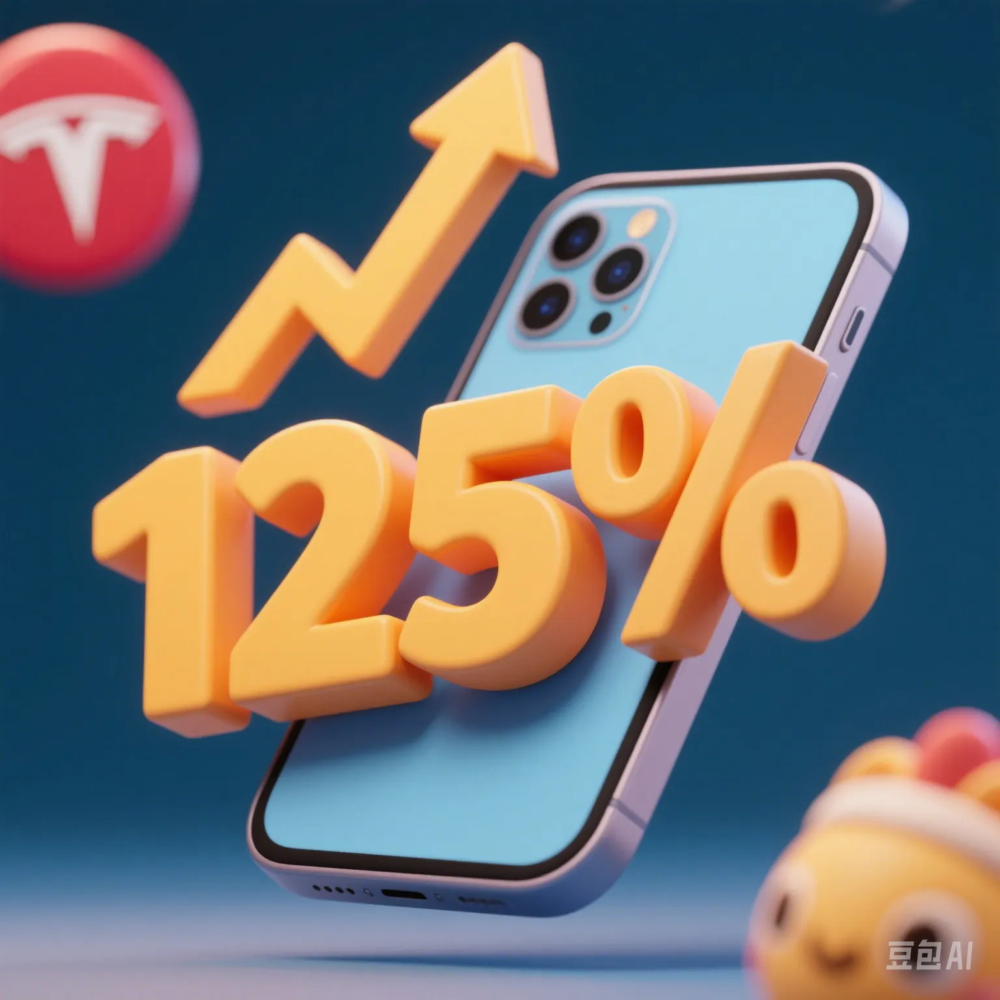

US - China Tariff War Escalates to 125%: Will Your iPhone and Tesla Get More Expensive?
PeaceLove.Top Insights :2025-04-17
A new 'price - hike storm' is brewing...
In early 2025, the US announced that it would raise tariffs on Chinese goods such as electric vehicles, batteries, and chips to a maximum of 125%, causing a huge shock in the global market. China is also brewing a new round of counter - measures, and the trade tension has heated up again. For ordinary people, the questions become very real:
'Will the iPhone 14 I plan to buy next month still be affordable?'
'Is it still worth buying a domestic new - energy vehicle?'
'Will laptops and electric vehicles skyrocket in price?'
Who will 'foot the bill'? - Each of us consumers!
When tariffs escalate, a chain reaction of soaring manufacturing costs, supply - chain relocation, delivery delays, and price increases occurs:
- Smartphones: Apple's supply chain highly depends on China, and the price of iPhones may rise by 5 - 10%.
- Electric vehicles: Tesla's Model 3/Y are produced in Shanghai, and the tax burden will be directly passed on to European and American buyers.
- Home appliances/3C products: Chinese products from Lenovo, Haier, Midea, etc. will face export barriers.
For Chinese consumers, price hikes of US brands in response, logistics delays, and the trend of domestic substitution are emerging.
Why is the 'tech tariff war' suddenly intensifying? 🔍
1. Political maneuvering during the US election year: Taking a high - profile 'tough stance' against China can attract voter support and is seen as a bargaining chip.
2. Protecting domestic new - energy enterprises: The US tries to use tariffs to curb the 'crazy expansion' of Chinese electric vehicles in the US market.
3. China's powerful industrial chain: In 2024, China's technological advantages in fields such as AI chips and battery materials alerted its competitors.
How are enterprises responding? - Parallel strategies of 'diversifying globally' and 'domestic substitution'
1. Multinational giants are accelerating the transfer of their supply chains:
- Apple is shifting more assembly lines to India and Vietnam.
- Tesla is considering expanding its factory in Mexico to avoid tariffs.
2. Chinese enterprises are promoting the domestic cycle and exploring the Belt and Road markets:
- Companies like Huawei and BYD are targeting emerging markets in the Middle East, Southeast Asia, and South America.
- Domestic consumers' support for 'de - Americanized' products is on the rise.
What's the future trend? Will it be a return to the Cold - War era or a warming - up of negotiations?
Currently, an intensification of frictions in the short term is inevitable, but the basic economic logic will eventually return to rationality:
- High tariffs will increase the costs of domestic enterprises, hurting both sides.
- Reconstructing the supply chain is not an overnight task, and 'Made in China' is still irreplaceable.
- 'Tech competition and cooperation' in fields such as AI, energy, and chips will dominate the new cycle.
For you and me, how can we avoid the 'price - hike pit'?
- ✅ Purchase 3C products highly dependent on imports (such as iPhones, graphics cards, Teslas) in advance.
- ✅ Pay attention to the performance of domestic substitute brands (such as Xiaomi cars, Huawei Mate series).
- ✅ Closely monitor price changes on cross - border e - commerce platforms and place orders during the window period.
Conclusion:
When tariffs become a 'new Cold - War weapon', we can't just passively bear price fluctuations. Understanding the economic logic behind this game is a self - awakening for every consumer.